-
Oddity of Being
meta-portraits, collected
These conceptual portraits set the subjects in a vulnerable, evanescent and mysterious atmosphere to portray transcendent, dark and fragile parts of human existence.
Collected during the last decade.
2014 - ongoing
- 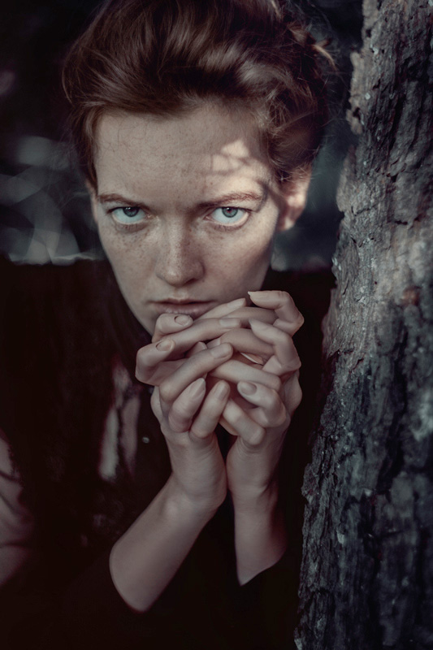
the witch
- 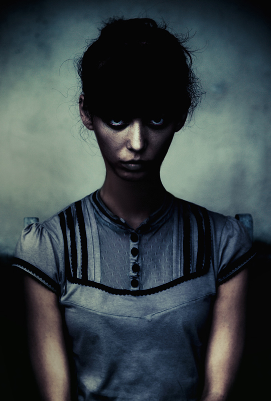
Sarah
- 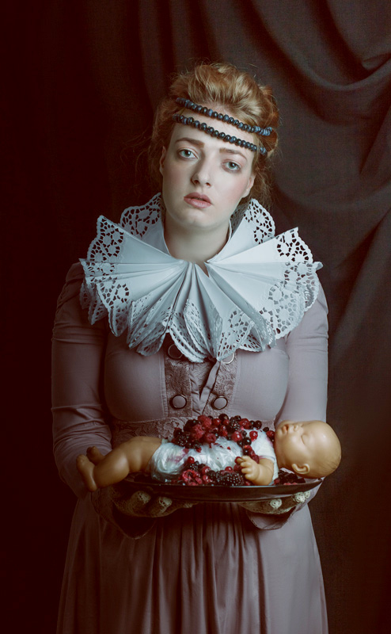
A bakery gift
- 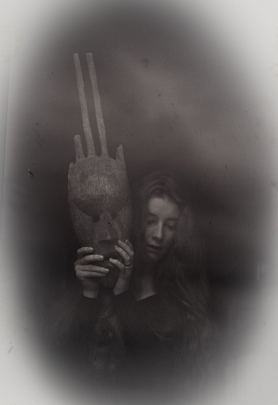
unmasking
- 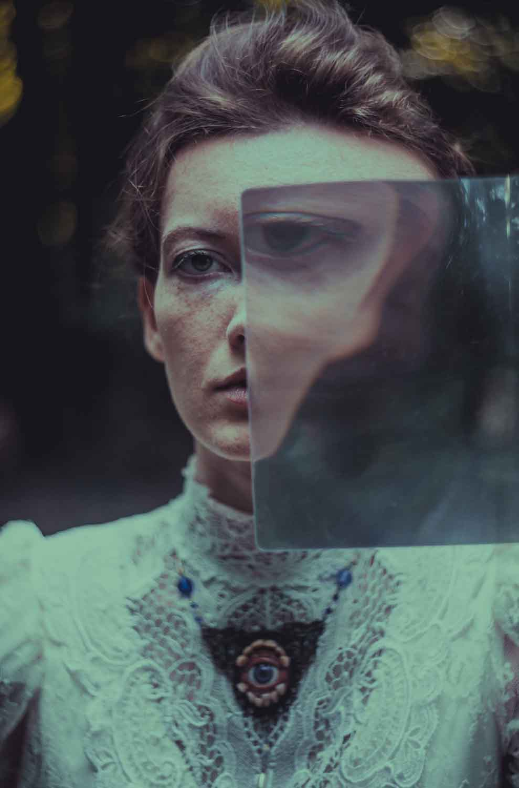
the art of sight
- 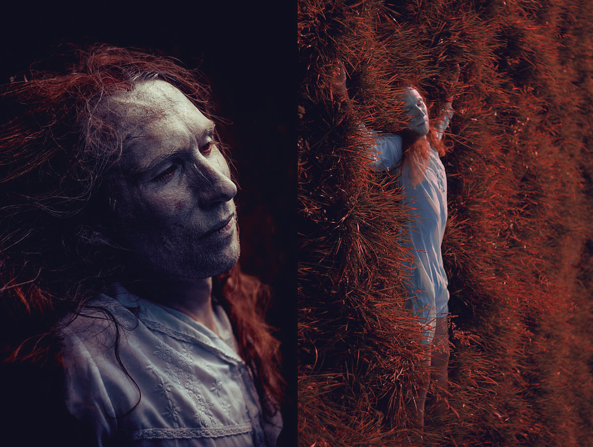
v a n i s h i n g
- 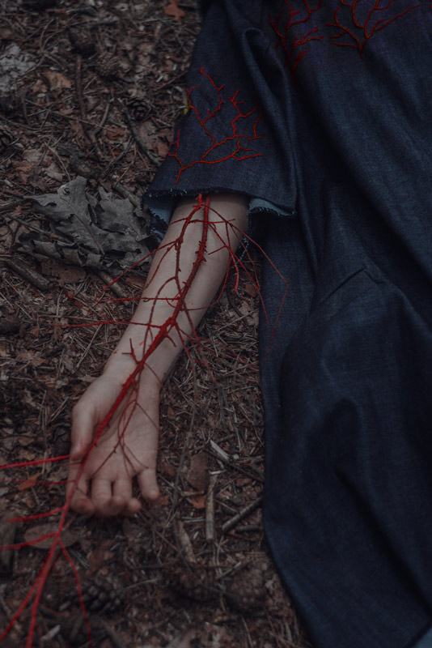
our veins
- 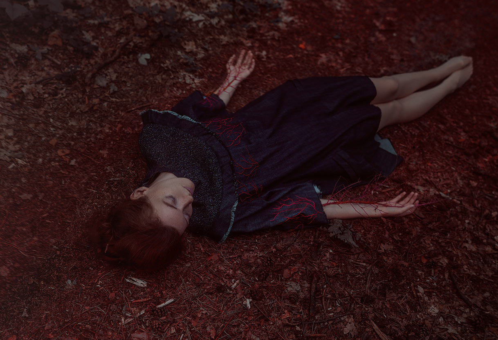
melting into the ground
- 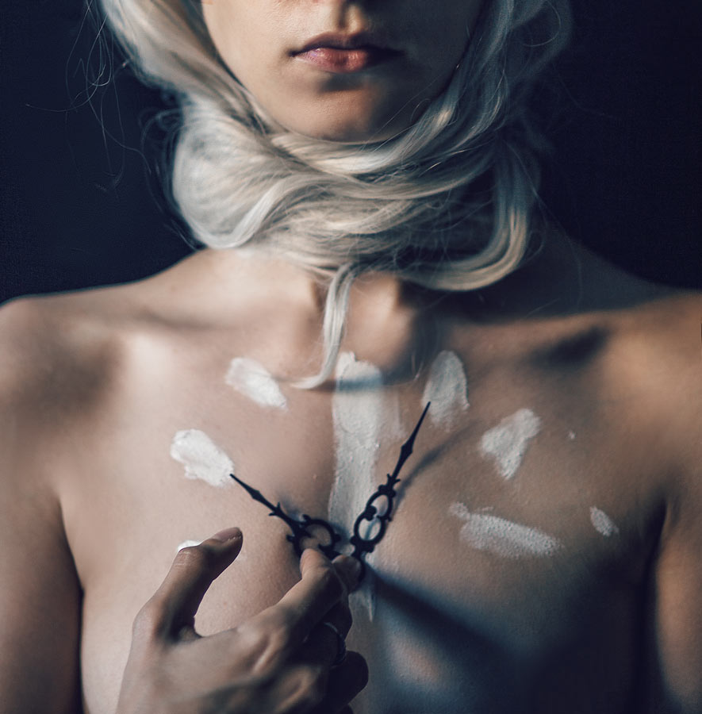
time is not infinite
- 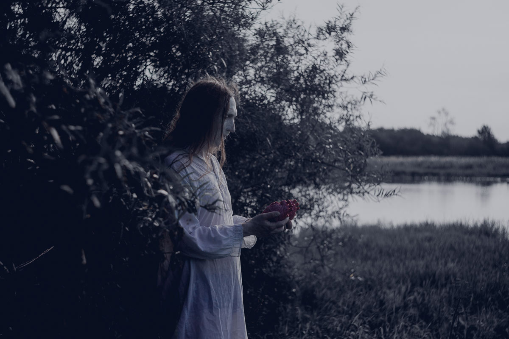
The burden's cradle
- 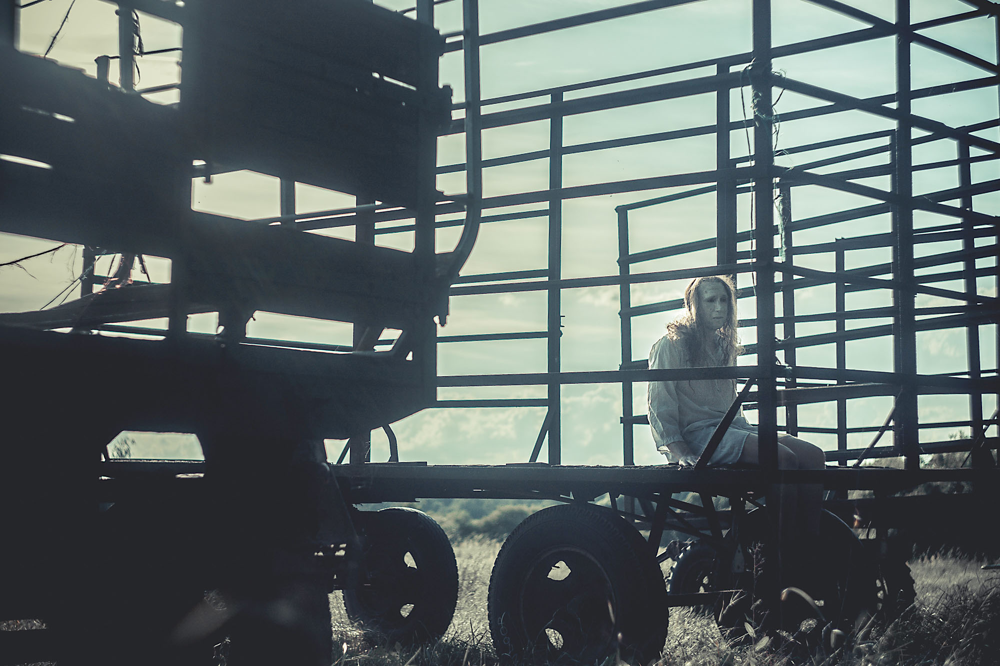
Sad Augustin, after the circus was gone